Happy Sisodia
Data Scientist
See my work

I have worked on multiple Machince learning and deep learning projects. Shown below are some of
those projects. For the source code please check out my page at GitHub!
- Convulational Neural Network for Image Classification
- Multi-layer Feed-Forward Neural Network to predict injury Severity
- K-Means Clustering using random matrix sparsification
- Multi-label categorization of of construction project documents
- Image Segmentation using Fully Convolutional Network
Convulational Neural Network for Image Classification
I built an Convulational Neural Network (CNN) using Sequential method of Keras to predict the label
of an Image. The dataset I used was CIFAR-10, which consists of 60,000 tiny 32*32*3 color images.
I normalized the Image so that the squashing function does not suffer from Exploding gradient problem.
The Graph below shows the Accuracy of the model during the traning and testing phase of the model.
The Accuracy of the model for the validation data set was 76%.
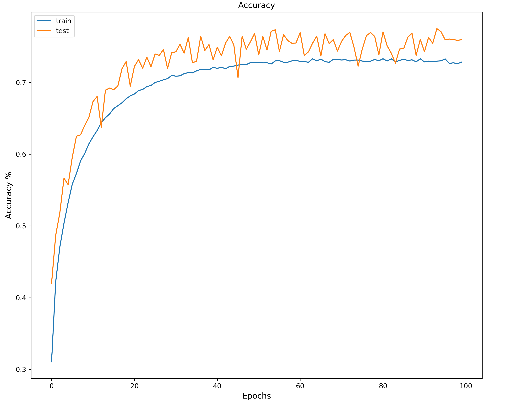
The Result of the model on a small set of Images is given below. It successfully predicted 8 out of 9
Images.
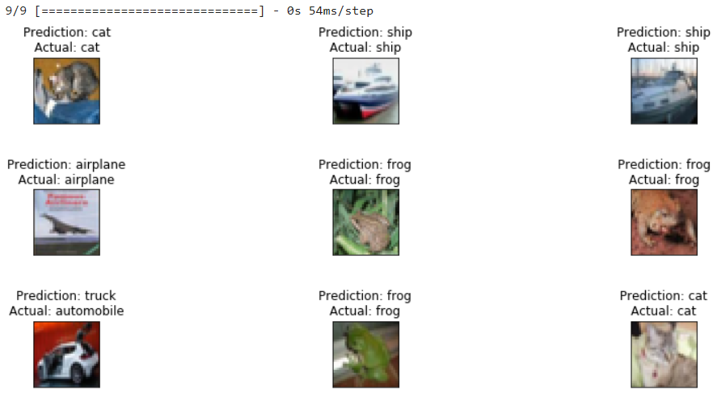
Multi-layer Feed-Forward Neural Network to predict injury Severity
The Main purpose of the project was is to examine the relationship between driver injury severity, driver,
vehicle and roadway condition.
Dataset: The dataset used was Fatal Analysis Reporting System (FARS). For the purpose of this paper,
data of only 2018 was used, which consisted of around 70,000 records.
EDA: I did a detailed Exploratory data analysis of the dataset. Out of nearly 100 fields, I selected 8 fields which
were though to contribute most to the task and did not conflict with one another. The graphs below show the relationship
between different fields and helped me understand the data more easily!
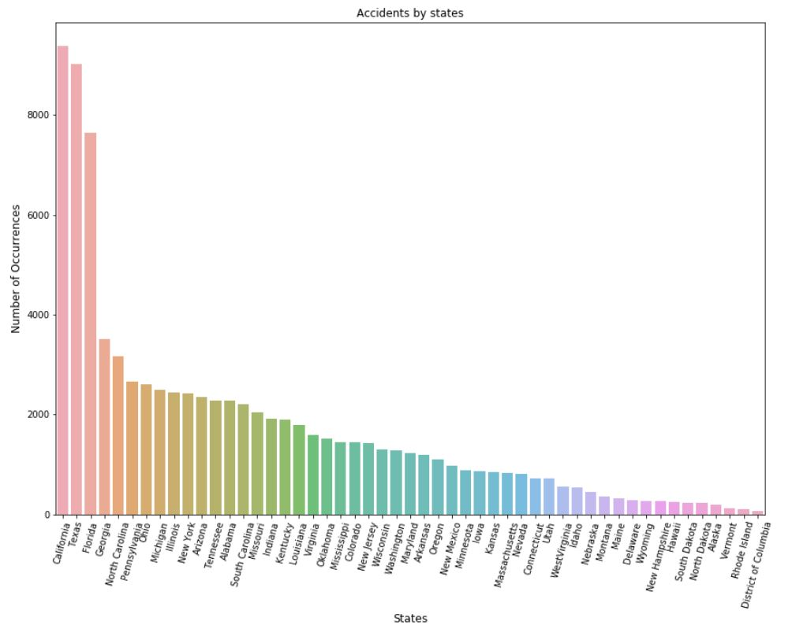
 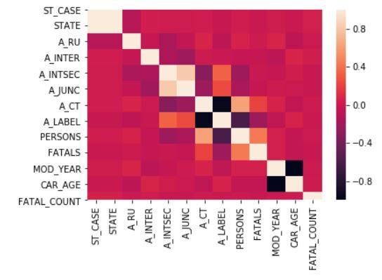
Some of the fields taken had too many values, thus some of the values that were similar were integrated into one.
All the values were normailized so that so the field that had more reange did not affect the model.
The Neural Network was made using onlu numpy and none of the premade libraries were uses. The NN was Feed-Forward with 2 layers.
All the different values like Learning Rate, momentum and weights were decide based on trial and error. The Neural Network predicted
with an accuracy of 45% for multiclass Classification and 60% for binary classification. The graph below shows the accuracy of the model.
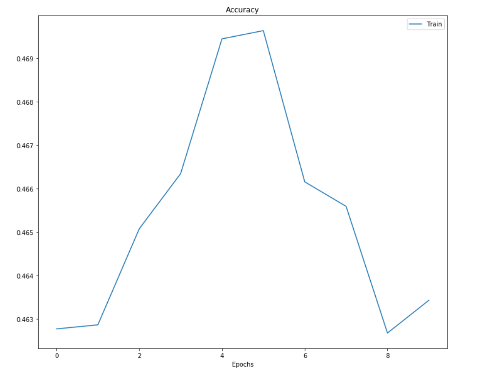
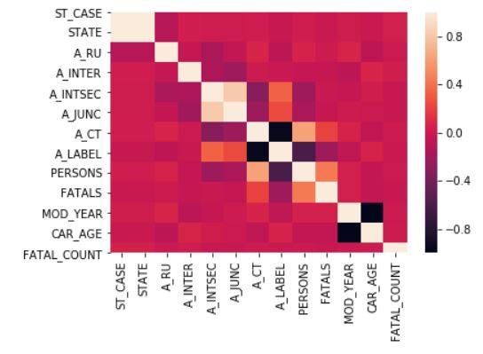
Some of the fields taken had too many values, thus some of the values that were similar were integrated into one.
All the values were normailized so that so the field that had more reange did not affect the model.
The Neural Network was made using onlu numpy and none of the premade libraries were uses. The NN was Feed-Forward with 2 layers.
All the different values like Learning Rate, momentum and weights were decide based on trial and error. The Neural Network predicted
with an accuracy of 45% for multiclass Classification and 60% for binary classification. The graph below shows the accuracy of the model.
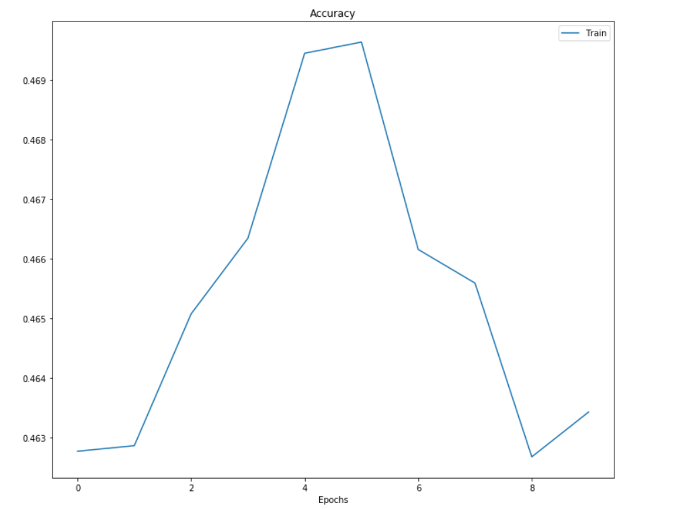
K-Means Clustering using random matrix sparsification
In this project I analysed and compared the performance of K-means on data matrix A and Sparse Data Matrix. Lloyd's K-means uses
Euclidean distance between each data point to form a cluster. This is one of the major bottlenecks with this algorithm, especially
for large amount of data, the time complexity will increase.
To Address this issue Dr K sinha suggested another method which would decrease the time taken be k-means to reach optimal solution.
The steps to be followed for this are as follows
- Apply Random Projection on Data matrix A
- Obtain Sparse Matrix à from data matrix A
- Apply K-means algorithm on à to obtain cluster and their centers
I applied this steps on MINST datasets to verify if the results were optimal. The figure 1 and 2 show the results of applying K-means
on raw data. Whereas the figure 3 and 4 show the results of applying K-means on Sparse Data.
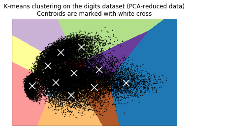
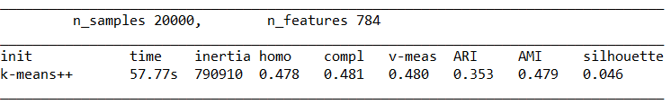
Results for Sparse Data
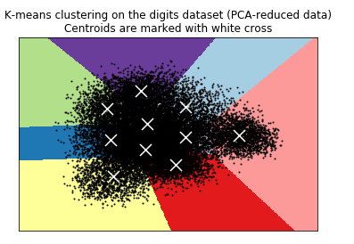
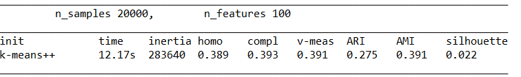
As can be seen from the results not only did the K-means took less time on sparse data set but the result obtained were optimal.
Multi-label categorization of of construction project documents
Image Segmentation using Fully Convolutional Network
SKILLS
 Artificial Intelligence
Artificial Intelligence
- Data Mining
- Data Visualization (Matplotlib, Seaborn)
- Data Preparation framework (Numpy, pandas)
- Machine Learning Algorithm
- Deep Learning Algorithms
- Neural Network
 Programming
Programming
- Python
- Progress 4gl
- R
- C / C++
- Shell Scripting

Others
- Unix and linux based system
- MS Office
- HTML5 & CSS3
- QAD
- Github Actions
EDUCATION

M.Sc In Computer Science
2019-2020

B.E In Computer Science
2011-2015
WORK EXPERIENCE
Thirdware Global Solution
Mumbai, Maharashtra
Software Engineer
-
Modify existing software – QAD to fit according to the needs of the client and to upgrade
interfaces and improve performance. Development of report, maintenance screen or a whole new module.
-
Advice customer about or perform maintenance of software system.
-
Store, retrieve and manipulate data for analysis of system capabilities and requirements.
-
Confer with project manager to obtain information on limitation and capabilities for data processing projects
-
Supervise and assign work to programmers, designers and other engineers to work and code in QAD.
-
Prepare reports concerning project specification , activities or status.
-
Worked for various clients like Lear, Watts Water and Vishay Semiconductor.